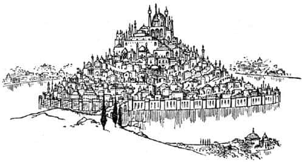
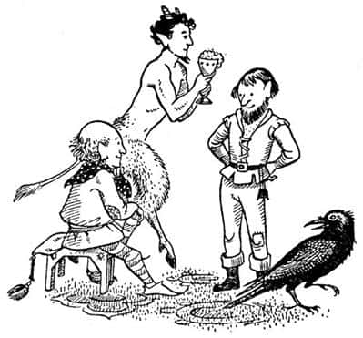

Shasta Narnialılarla Karşılaşıyor
Shasta önceleri, aşağıdaki vadide, birkaç kubbe ve sivri kulenin içinden yükseldiği buğu denizinden başka hiçbir şey görememişti. Fakat ışık arttıkça ve sis dağıldıkça daha fazlasını görebiliyordu. Geniş bir nehir iki kola ayrılmıştı ve aralarındaki adada dünya harikası Tashbaan şehri bulunmaktaydı. Adanın çevresi yüksek duvarlarla çevrelenmiş, suyun eteklerini dövdüğü, saymaya çalışmaktan kısa sürede vazgeçtiği birçok kuleyle tahkim edilmişti. Duvarların içinde ada, bir tepe gibi yükseliyordu. Tepedeki büyük Tash Tapınağı’na ve Tisroc’un sarayına kadar tüm yamaçlar, binalarla kaplıydı – teras üstüne teras, cadde üstüne cadde, zikzak yollar ya da kenarlarında portakal ve limon ağaçlarıyla devasa merdivenler, çatılardaki bahçeler, balkonlar, uzun, kemerli yollar, sütunlu geçitler, burçlar, sivri kuleler ve minareler vardı. Sonunda, güneş denizden doğup da tapınağın gümüş kaplı kubbesinden ışıklar yansıdığında, Shasta’nın gözleri neredeyse kamaşmıştı.
“Devam et Shasta” deyip durdu Bree.
Vadinin her iki yakasındaki nehir kenarlarında öyle bahçeler vardı ki, yaklaşıp ağaçların arasından bakan sayısız evin beyaz duvarlarını görene kadar, bir orman gibi görünüyorlardı. Biraz daha yaklaştıklarında Shasta, meyve ve çiçeklerin nefis kokusunu hissetti. On beş dakika sonra bahçelerin arasındaydılar. İki tarafında beyaz duvarların olduğu ve duvarların üzerinden ağaç dallarının sarktığı düzgün bir yolda ağır adımlarla yürüyorlardı.

“Bence” dedi Shasta saygılı bir sesle, “burası harika bir yer.”
“Tahmin ederim” dedi Bree. “Fakat keşke öbür tarafa geçmiş olsaydık. Narnia ve kuzeye!” O anda alçak ve titreşen bir ses duyulmaya başladı ve sanki bütün vadi o ses yüzünden sallanıyormuş gibi olana kadar giderek arttı. Müzikli bir sesti, fakat ürküntü verecek kadar güçlü ve heybetliydi.
“Şehrin kapılarının açılması için çalınan borular olmalı” dedi Bree. “Bir dakika sonra orada olacağız. Aravis, şimdi omuzlarını biraz daha düşür, adımlarını ağırlaştır ve bir prenses gibi davranmayı bırak. Bütün yaşamın boyunca tekmelenip tokatlandığını ve sana kötü sözler edildiğini düşünmeye çalış.”
“Bana öğüt vereceğine…” dedi Aravis, “başını biraz sarkıtsan, boynunu daha az eğsen ve bir savaş atı gibi davranmasan daha iyi olmaz mı?
“Şşşşş” dedi Bree. “İşte geldik.”
Gelmişlerdi. Nehrin kenarına ulaşmışlardı. Önlerindeki yol, birçok kemeri olan bir köprü boyunca uzanmaktaydı. Su, ilk gün ışıklarıyla dans eder gibi pırıl pırıl kıpırdanıyordu. Bir an için sağ taraflarında, uzakta, nehrin ağzının yakınındaki gemilerin direklerini gördüler. Önlerinde, köprüde, yüklü eşek ya da katırlarıyla ya da sepetlerini başlarının üstünde taşıyan ve çoğu köylü olan birçok başka yolcu vardı. Çocuklar ve atlar kalabalığa karıştılar.
Shasta, yüzündeki tuhaf ifadeyi görünce Aravis’e, “Bir sorun mu var?” diye fısıldadı.
“Oh, senin için her şey çok iyi” diye fısıldadı Aravis sertçe. “Tashbaan’dan sana ne? Oysa ben böyle gizlice değil, önde askerler, arkada kölelerle bir arabaya kurulmuş, diyelim ki Tisroc’un – ömrü uzun olsun – sarayında bir ziyafete gidiyor olmalıydım.”
Shasta bunun çok gülünç olduğunu düşündü.
Köprünün öbür ucunda şehrin duvarları yükselmekteydi. Aslında geniş olan ancak çok yüksek olduğu için dar görünen girişteki pirinç kapılar, ardına kadar açıktı. Kapının her iki yanında, mızraklarını yere dayamış yarım düzine asker dikilmekteydi. Aravis, “Kim olduğumu bilselerdi toparlanıp selam dururlardı” diye düşünmekten kendini alamadı. Fakat diğerleri, nasıl geçeceklerini düşünüyor, askerlerin soru sormamaları için dua ediyorlardı. Şansları vardı; sormadılar fakat askerlerden biri bir köylünün sepetinden bir havuç alıp, kaba bir gülüşle Shasta’ya fırlattı:
“Hey! Seyis çocuk!” dedi, “Eğer efendin binek atına yük taşıttığını öğrenirse görürsün gününü.” Atlar hakkında biraz bilgisi olan hiç kimsenin, Bree’yi bir süvari atından başka bir şeyle karıştırmayacağını gösteren bu sözler onu çok fena korkuttu.
“Efendimin emri, ne yapayım!” dedi Shasta, ama dilini tutsaydı iyi olurdu çünkü asker, “Al bakalım seni gidi küçük pislik. Bu sana özgür insanlarla nasıl konuşman gerektiğini öğretir” deyip yüzüne öyle bir tokat vurdu ki, neredeyse yere düşüyordu. Shasta kısa bir süre ağladı, ağır dayaklara alışkındı.
Neyse ki hiçbiri de durdurulmadan şehre sızmışlardı. Kapıların ardındaki Tashbaan, daha önce uzaktan gördükleri kadar görkemli gelmemişti onlara. Girdikleri ilk cadde daracıktı ve her iki yanındaki duvarlarda neredeyse hiç pencere yoktu. Şehir, Shasta’nın umduğundan daha kalabalıktı. Kısmen, onlarla beraber gelen (ve pazara giden) köylülerden oluşuyordu bu kalabalık, fakat aynı zamanda sucular, şekerlemeciler, hamallar, askerler, dilenciler, pejmürde çocuklar, tavuklar, başıboş köpekler ve çıplak ayaklı köleler de vardı. Orada olsaydınız asıl fark edeceğiniz şey, yıkanmamış insanların, pis köpeklerin, sarımsak, soğan ve her yere yayılmış çöplerin kokusu olurdu.
Shasta bir rehber gibi davranıyordu, ama gerçekte yolu bilen Bree idi ve burnuyla yavaşça dürterek ona yolu göstermekteydi. Az sonra sola döndüler ve dik bir yokuşa tırmanmaya başladılar. Hava çok temiz ve güzeldi. Her iki yanı ağaçlı olan yol boyunca, yalnızca sağ tarafta evler vardı. Sol tarafta, şehrin aşağısındaki evlerin çatılarına bakıyorlar ve nehrin epeyce yukarısını görebiliyorlardı. Sonra sağa doğru keskin bir dönemeci geçip yukarı tırmanmaya devam ettiler. Zikzaklar çizerek Tashbaan’ın merkezine doğru gidiyorlardı. Çok geçmeden daha güzel sokaklara geldiler. Tanrıların ve Calormen kahramanlarının – bakıldığında hoş olmaktan daha çok, etkileyici olan – büyük heykelleri parlak kaideler üzerinde yükselmekteydi. Palmiyeler ve sütunlu kemerler, ateş gibi yanan yolları gölgeliyorlardı. Shasta, birçok sarayın kemerli kapısının aralığından, yeşil dalların, soğuk çeşmelerin ve bakımlı bahçelerin görüntüsünü yakalamış, içerisi güzel olmalı, diye düşünmüştü.
Her köşeyi dönüşlerinde Shasta, kalabalıktan kurtulacaklarını umuyordu, ancak bu bir türlü olmuyordu. Kalabalıkta çok yavaş ilerleyebiliyorlardı; bazen de tamamıyla durmak zorunda kalıyorlardı. Arada bir, biri yüksek sesle, “Yol açın, yol açın, Tarkaan’a yol açın” ya da “Tarkheena’ya yol açın” ya da “on beşinci vezire”, “elçiye yol açın” diye bağırdığı zaman duruyorlardı ve kalabalık, duvarlara doğru sıkışıyordu. Bu sırada Shasta, bazen başlarının üstünden dört, hatta insan azmanı altı kölenin çıplak omuzlarında taşıdığı tahtırevanda tembelce uzanmış, uğruna bütün bu yaygaranın yapıldığı gösterişli efendiyi ya da hanımı görebiliyordu. Çünkü Tashbaan’da sadece bir trafik kuralı vardır; eğer kırbaçla yaralanmak ya da bir mızrağın kör tarafıyla dövülmek istemiyorlarsa, az önemli kişiler daha önemli kişilerin yolundan çekilmek zorundadır. Şehrin tepesine yakın (üzerlerinde sadece Tisroc’un sarayı vardı) görkemli bir caddede, bu duraklamaların en fecisi meydana geldi:
“Yol açın, yol açın, Tisroc’un (ömrü uzun olsun) misafiri Beyaz Barbarların Kralı’na yol açın! Narnialı lordlara yol açın!”
Shasta yoldan çekilmeye ve Bree’yi geri geri götürmeye çalıştı. Fakat hiçbir at, Narnialı konuşan bir at bile, kolay kolay gerileyemez. O an Shasta’nın hemen ardında bulunan kadın, iki eliyle kavradığı sert kenarlı sepeti Shasta’nın omuzlarına doğru iterek “Sen kimi itiyorsun? Gösteririm gününü!” dedi. Sonra, yanındaki bir başkası onu itekledi ve Shasta o anlık kargaşada Bree’nin dizginlerini kaybetti. Daha sonra arkasındaki kalabalık o kadar sıkıştı ki, hiç hareket edemedi. Böylece kendisini istemeyerek de olsa ön sırada buldu ve caddeden aşağı gelmekte olan grubun harika bir görüntüsünü yakaladı. O gün içinde gördüğü bütün gruplardan tamamıyla farklıydı bu. Ön tarafta “Yol açın, yol açın” diye bağırarak ilerleyen tellal, yaklaşık yarım düzine adamın bulunduğu gruptaki tek Calormenliydi. Tahtırevanları yoktu, herkes yürüyordu. Ve Shasta ömründe onlara benzeyen kimse görmemişti. Bir kere, hepsi de kendisi kadar beyaz tenliydi ve çoğunluğu sarışındı. Calormen erkekleri gibi giyinmemişlerdi. Çoğunun bacakları dizlerine kadar çıplaktı. Tunikleri zarif, parlak ve – orman yeşili, tatlı sarı, mavi gibi – zengin renklerdeydi. Sarık yerine çelik ya da gümüş miğferler giymişlerdi; bazıları mücevher kakmalıydı, birinin de her iki yanında küçük kanatlar vardı. Bellerindeki kılıçlar Calormen palaları gibi eğik değil, uzun ve düzgündü. Birçok Calormenli gibi ciddi ve gizemli olmak yerine, ellerini kollarını serbestçe sallayarak yürüyorlar, gülüp konuşuyorlardı. Bir tanesi ıslık çalıyordu. Dostluk gösteren herkesle dost olmaya hazır olduklarını ve dost görünmeyenlere de, zerre kadar değer vermediklerini anlayabiliyordunuz. Shasta, ömründe böyle güzel bir görüntüye tanık olmadığını düşünüyordu.
Ne var ki bundan keyif alacak zamanı bulamadan, bir felaketle karşı karşıya kaldı. Sarı saçlı adamların başkanı aniden Shasta’yı işaret ederek, “İşte orada! Aradığımız kaçak orada!” diye bağırdı ve onu omuzlarından yakaladı. Bir an sonra Shasta’ya – ağlatacak kadar kötü değil, ama saygınlığının olmadığını bildirecek ağırlıkta – bir tokat attı ve onu sarsarak sözlerini sürdürdü:
“Yazıklar olsun sana! Ayıp ayıp! Senin yüzünden Kraliçe Susan’ın gözleri ağlamaktan kıpkırmızı oldu. Ne! Bütün gece kaçarsın ha! Neredeydin?”
Shasta’nın biraz olsun şansı olsaydı, Bree’nin altına gizlenip kalabalıkta kaybolmayı denerdi fakat sarı saçlı adamlar, şimdi onu çembere almışlar, sıkıca tutuyorlardı.
Kuşkusuz ilk aklına gelen şey, kendisinin fakir balıkçı Arsheesh’in oğlu olduğunu ve yabancı efendinin onu başka biriyle karıştırdığını söylemekti. Fakat aynı zamanda bu kalabalık yerde yapmak istediği son şey, kim olduğunu ve ne yaptığını açıklamaya çalışmaktı. Bunu yaparsa biraz sonra atını nereden aldığı, Aravis’in kim olduğu sorulacaktı. İşte o zaman – elveda Tashbaan’ı geçme şansı! Bir sonraki dürtüsü, yardım için Bree’ye bakmak oldu. Fakat Bree’nin bütün bu kalabalığa konuşabildiğini göstermeye hiç niyeti yoktu ve olabildiğince aptal görünerek orada dikiliyordu. Aravis’e gelince… Shasta, dikkat çekeceği korkusuyla ona bakmaya cesaret bile edememişti. Daha düşünmeye fırsat bulamadan Narnialıların başkanı söze girdi:
“Küçük lordun bir elinden saygıyla tut Peridan, ben de öbürünü tutacağım. Hadi gidelim. Küçük kaçağı evde görünce soylu kız kardeşimizin kafası oldukça rahat edecek.”
Böylece Tashbaan’ın yarısını bile geçemeden, planları altüst olmuştu. Shasta, diğerlerine elveda deme fırsatı bile bulamadan, kendini yabancılar arasında yürürken ve gelecekte ne olacağını tahmin etmeyi düşünemez halde buldu. Narnialı Kral – Shasta, diğerlerinin konuşma biçiminden onun kral olduğunu anlamaya başlamıştı – ona sorular sorup duruyordu. Nerede olduğunu, nasıl kaçtığını, giysilerini ne yaptığını ve çok yaramaz olduğunu bilip bilmediğini sormuştu. Ama Kral “yaramaz” yerine “yaramazlık” diyordu.
Shasta hiç cevap vermiyordu; kendisi için tehlikeli olmayan sözler bulmakta zorlanıyordu.
“Ne! Konuşmayacak mısın?” diye sordu Kral. “Prens, seninle açık konuşacağım. Umarım bu konuşmama kararın, kaçışındaki kararlılık kadar kanına girmemiştir. Kaçışın bir çocukluk hevesi, bir eğlence olarak algılanabilir. Fakat Archenland Kralı’nın oğlu yaptıklarını anlatmalıdır, Calormenli bir köle gibi boynunu bükmemelidir.”
Bu durum hiç de hoş değildi. Shasta bu genç kralın çok nazik bir yetişkin olduğunu düşünüyor ve onun üzerinde iyi bir izlenim bırakmak istiyordu.
Yabancılar onu – ellerinden sımsıkı tutarak – dar bir cadde boyunca, alçak merdivenlerden aşağı ve başka merdivenlerden yukarı, beyaz bir duvarla çevrili, her iki yanında uzun, kara selviler bulunan geniş bir giriş kapısına götürdüler. Kemeri geçince Shasta kendini, aynı zamanda bahçe olan bir avluda buldu. Ortadaki mermer havuzun berrak suyu, fıskiyeden düşen sularla sürekli dalgalanıyordu. Düzgün çimlik alanın etrafında portakal ağaçları vardı ve bahçeyi çevreleyen dört beyaz duvar, yediveren gülleriyle kaplıydı. Caddenin gürültüsü, tozu ve kalabalığı, aniden çok uzakta kalmış gibiydi. Hızla bahçeden geçirilip karanlık bir kapıya götürüldü. Tellal dışarıda kalmıştı. Biraz sonra, taş zemini, sıcaktan pişmiş ayaklarına çok hoş gelen bir koridora girdiler ve merdivenleri tırmandılar. Shasta, bir an sonra kendini, ardına kadar açılmış pencereleri kuzeye bakan ve bu yüzden hiç güneş girmeyen, büyük ve havadar bir odanın aydınlığında gözlerini kırpıştırırken buldu. Yerde, şimdiye kadar gördüklerinden çok daha güzel, renkli bir halı vardı ve ayakları, sanki derin bir yosunlukta yürürmüş gibi halıya gömülmekteydi. Duvarların çevresinde, üzerinde zengin görünümlü yastıkların bulunduğu alçak sedirler vardı. Ve oda kalabalıktı. Shasta, bazıları çok tuhaf insanlar diye düşünürken, odadaki en güzel kadın yerinden kalkıp onu kollarına aldı ve öptü. “Oh Corin, Corin nasıl yaparsın bunu?” dedi, “Annenin ölümünden beri o kadar yakın dosttuk ki, eğer ben sensiz eve dönseydim soylu babana ne söylerdim? Neredeyse, çok eskiden beri dost olan Archenland ve Narnia arasında bir savaşa sebep olacaktın. Yaramazlık dostum, bizi böyle kullanman yaramazlık.”
“Görülüyor ki” diye düşündü kendi kendine Shasta, “her neresiyse, Archenland prenslerinden biriyle karıştırıyorlar beni. Ve bunlar Narnialılar olmalı. Gerçek Corin nerede acaba?” Fakat bu düşünceler, onun yüksek sesle konuşmasına yardım etmedi.
“Neredeydin Corin?” dedi kadın, elleri hâlâ Shasta’nın omuzlarında.
“Ben – ben bilmiyorum” diye kekeledi Shasta.
“Görüyorsun Susan” dedi Kral. “Doğru ya da yanlış tek söz bile alamadım ağzından.”
“Majesteleri! Kraliçe Susan! Kral Edmund!” dedi biri ve Shasta sesin geldiği yere bakmak üzere döndüğünde şaşkınlıktan neredeyse küçük dilini yutacaktı. Çünkü bu, odaya ilk girdiğinde göz ucuyla gördüğü tuhaf insanlardan biriydi. Boyu Shasta’nınki kadardı, belinden yukarısı insan gibiydi fakat bacakları keçi bacaklarına benziyordu ve kıllıydı. Toynakları ve kuyruğu vardı. Teni epeyce kırmızımsı, kıvırcık saçlı, kısa sivri sakallıydı ve iki küçük boynuzu vardı. Bu bir Faun’du ve Shasta bugüne kadar böyle bir yaratığı ne görmüş ne de duymuştu. Siz eğer Aslan, Cadı ve Dolap diye bir kitap okuduysanız, onun adının Tumnus olduğunu ve Kraliçe Susan’ın kız kardeşi Lucy’nin, Narnia’ya gittiği ilk gün karşılaştığı Faun’un ta kendisi olduğunu bilmek istersiniz sanırım. Ancak şimdi oldukça yaşlıydı, çünkü Peter, Susan, Edmund ve Lucy yıllardan beri Narnia kralları ve kraliçeleriydiler.
“Majesteleri” diyordu Faun, “küçük ekselanslarını biraz güneş çarpmış. Bakın! Bilinci tam açık değil. Nerede olduğunu bilmiyor.”
Kuşkusuz bundan sonra herkes onu azarlamayı ve soru sormayı bıraktı; özenle sedire yatırıldı ve başının altına yastıklar konuldu, altın kupalar içinde buzlu şerbetler getirildi ve sessizce uzanması söylendi.
Hayatı boyunca Shasta’nın başına böyle bir şey gelmemişti. Bu kadar rahat bir sedirin üzerinde yatacağını ve bu kadar lezzetli bir şerbet içeceğini hayal bile etmemişti. Hâlâ diğerlerine ne olduğunu, bir yolunu bulup da nasıl kaçacağını ve onlarla mezarlarda nasıl buluşacağını ve gerçek Corin ortaya çıktığında neler olacağını merak ediyordu. Fakat şimdi aceleye gerek yoktu. Rahatı yerindeydi, hem birazdan belki de yiyecek iyi bir şeyler gelirdi! Bu arada, o serin ve havadar odadaki insanlar çok ilginçti. Faun’la beraber iki cüce – daha önce görmediği türden bir yaratık – ve çok büyük bir kuzgun vardı. Gerisi yetişkin, ama genç insanlardı; kadın-erkek hepsi, birçok Calormenliden daha şirin yüze ve sese sahiptiler. Biraz sonra Shasta, kendini konuşmayla ilgilenirken buldu. “Madam şimdi ne düşünüyorsunuz?” diyordu Kral, Kraliçe Susan’a (Shasta’yı öpen kadına). “Tam üç haftadır bu şehirdeyiz. Bu kara yüzlü âşığınızla, Prens Rabadash’la evlenip evlenmeyeceğinize dair bir karara vardınız mı kafanızda, yoksa?..”

Kadın başını salladı. “Hayır kardeşim” dedi, “Tashbaan’daki bütün mücevherleri verse bile evlenmem.” (“Ne!” diye düşündü Shasta. “Kral ve Kraliçe oldukları halde birbirleriyle evli değiller, birbirleriyle kardeşler.”)
“Şunu bil ki kardeşim” dedi Kral, “Onunla evlenseydin seni daha az severdim. Ve sana şunu söylemeliyim: Tisroc’un, elçileriyle evlilik teklifini iletmesinin ardından, Narnia’ya ilk kez gelen Prens, Cair Paravel’de misafirimizken ona o kadar içtenlik göstermen beni kuşkulandırıyordu.”
“Bu benim budalalığımdı Edmund” dedi Kraliçe Susan “ve bunun için yalvarırım beni affet. Ne var ki bu prens bizimle birlikte Narnia’dayken, şimdi Tashbaan’da göründüğü gibi değildi, farklıydı. Hepiniz şahidimsiniz ki, kardeşimiz Ulu Kral’ın onun için düzenlediği büyük turnuvada olağanüstü başarı göstermişti ve yedi gün boyunca bizimle uysalca ve nazikçe arkadaşlık etmişti. Ancak burada, kendi şehrinde, öbür yüzünü gösterdi.”
“Ah!” diye gakladı Kuzgun. “Bir atasözü, ne olduğuna karar vermeden önce ayıyı mağarasında gör, der.”
“Bu çok doğru, Sallowpad” dedi cücelerden biri. “Diğer bir atasözü de; gel benimle yaşa, beni tanıyacaksın, der.”
“Pekâlâ” dedi Kral. “Şimdi ne olduğunu gördük; yani o, çok gururlu, lükse düşkün, kanlı zalim ve kendini beğenmiş bir diktatör.”
“Öyleyse, Aslan’ın adına” dedi Susan, “Tashbaan’ı hemen bugün terk edelim.”
“Güçlük de işte burada kardeşim” dedi Edmund. “Çünkü şimdi, son iki gündür, hatta daha öncesinden beri kafamda beliren düşünceleri hepinize açıklamalıyım. Peridan, lütfen kapıyı kontrol et, casusluk yapmasınlar. Tamam mı? Şimdi. Evet, şimdi gizlilik içinde yapmalıyız bunu.”
Herkes çok ciddi görünmeye başlamıştı. Kraliçe Susan, sıçrayarak kardeşinin yanına koştu. “Oh, Edmund!” diye bağırdı “Neler oluyor? Yüzün hiç iyi görünmüyor.”